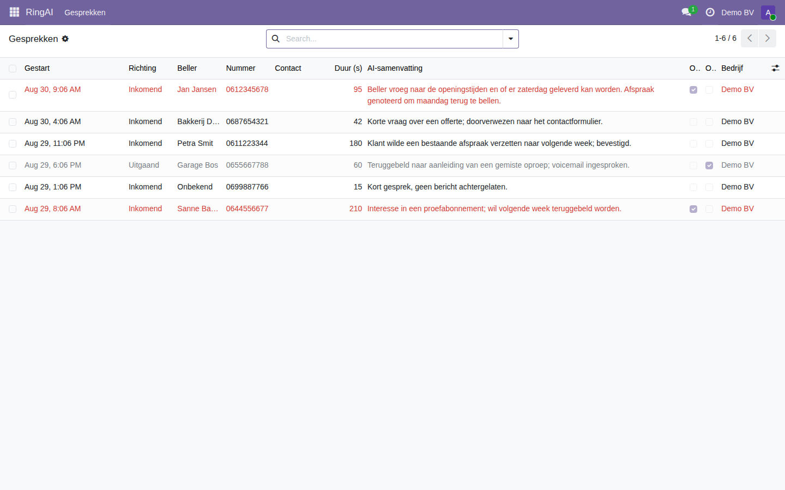
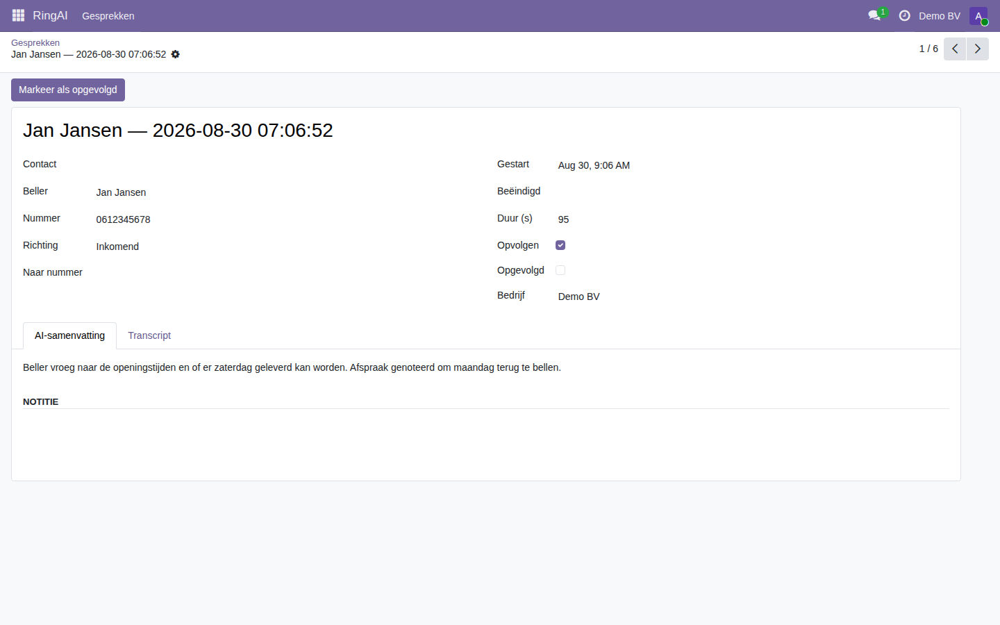

RingAI Voice Connector
Je AI-telefoniste in Odoo — gesprekken, AI-samenvattingen en automatische terugbel-taken per klant.
Wat het doet
- Gesprekslog in Odoo — elk in- of uitgaand RingAI-gesprek als record: beller, AI-samenvatting, transcript, duur en richting.
- Automatische opvolging — een gesprek dat opgevolgd moet worden wordt een terugbel-activiteit op de juiste contactpersoon.
- Per bedrijf — elk Odoo-bedrijf koppelt aan zijn eigen RingAI-tenant; multi-company out of the box.
- AI-terugkoppeling in je CRM — de samenvatting van elk gesprek staat direct bij de klant.
Screenshots


Hoe het werkt
RingAI levert de spraak en de intelligentie (AI-telefoniste op Voys/SIP); Odoo is je klant- en opvolgsysteem. De connector haalt de gesprekken op via de beveiligde RingAI-API (per-bedrijf connector-key) en koppelt ze aan je contacten. Base URL instellen onder Instellingen -> RingAI, de connector-key per bedrijf onder Instellingen -> Bedrijven. Een geplande taak synct automatisch elke 15 minuten.
Vereisten
- Een actief RingAI-account (ringai.nl).
- Per Odoo-bedrijf een RingAI connector-key (Instellingen -> Bedrijven). De key bepaalt van welke tenant de gesprekken komen; geen databasetoegang nodig.
Woon IoT BV · ringai.nl · info@ringai.nl